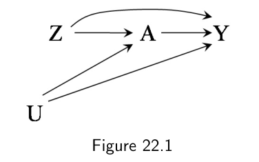
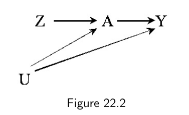
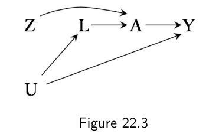
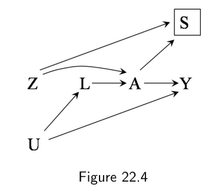

第三部分 · 时变处理的因果推断 · Part III — Causal inference for time-varying treatments
第 22 章 · 目标试验模拟
Hernán MA, Robins JM（2020）. Causal Inference: What If. Chapter 22. 本页为中文全文翻译，附译注。
如第一部分所述，从观察性数据做因果推断，可以看作是在试图模拟一个假想的随机化试验，我们称之为目标试验（target trial）。不过，第一、二部分只涉及那些比较时间固定处理（time-fixed treatment）的简化版目标试验。既然现在已经掌握了处理时变处理所需的所有工具，我们就可以讨论那些比较持续处理策略（sustained treatment strategies）的真实目标试验了。本章把目标试验的概念推广到持续处理策略，并勾勒出一个统一的因果推断框架——无论数据来自随机化试验还是观察性研究。
本章还描述了一套在模拟目标试验时可能关心的因果效应分类，包括意向治疗效应（intention-to-treat）与按方案效应（per-protocol）在观察性情形下的对应物。要有效估计这些因果效应，一般需要关于时变预后因素与处理的数据，并借助 g 方法来恰当地调整这些时变因素。正是 g 方法的发展，才让这里讨论的概念不再只是形式上的练习：只要能获取所有重要的固定与时变混杂因素的数据，我们如今就可以有效地估计所关心的效应。
22.1 意向治疗效应与按方案效应
设想一项随机化试验：有被危险病毒感染风险的人被随机分到联合处理组——立即接种疫苗，若感染则加用试验性抗病毒治疗（Z = 1），或被分到标准治疗组（Z = 0），后者既不接种疫苗也不使用抗病毒治疗。图 22.1 用分配到的处理 Z、实际接受的处理 A，以及结局（死亡）Y 来表示这项试验。对某个具体个人而言，Z 与 A 的取值可能不同，原因是没有遵守分配到的处理：分到疫苗组（Z = 1）的人可能因为拒绝接种而没打上疫苗（A = 0），分到不接种组（Z = 0）的人也可能在试验之外自己搞到了疫苗（A = 1）。变量 U 表示那些未被测量的、影响个人接种决定的风险因素。
如图 22.1 所示，分配到的处理 Z 可以通过两条不同的路径对结局 Y 产生因果效应。第一，分配处理 Z 之所以能影响结局 Y，仅仅是因为它影响了实际接受的处理 A。分到疫苗组的人更可能真正接种疫苗，这由从 Z 指向 A 的箭头表示。如果接种疫苗对死亡率有因果效应（如从 A 指向 Y 的箭头所示），那么分配到疫苗组就通过 Z → A → Y 这条路径对结局 Y 产生了因果效应。
第二，分配处理 Z 还能通过不经过实际处理 A 的路径来影响结局 Y。例如，知道自己被分到了哪一组，可能改变受试者的行为：知道自己被分到"疫苗加有前景的抗病毒治疗"的人，可能会变得不那么注意防护。这些行为改变由从 Z 直接指向 Y 的箭头表示。


因此，分配处理 Z 的因果效应不仅取决于 A → Y 这条箭头（实际处理效应）的强度，还取决于 Z → A 这条箭头（研究中遵守分配处理的程度）和 Z → Y 这条箭头（同期的行为改变）的强度。Z 的效应并不是"用 A 做处理的效应"，而是"把受试者分配到'用 A 做处理'"或"怀有'用 A 做处理'的意图"所产生的效应——这正是随机化分配 Z 的效应常被称为意向治疗效应（intention-to-treat effect）的原因。
对分配到的处理而言，一般不会预期有混杂，因为 Z 是随机分配的。对分配处理 Z，可交换性 Yz ⊥⊥ Z 应当成立，因为图 22.1 中从 Z 到 Y 没有后门路径。Z 与 Y 之间的关联就意味着 Z 对 Y 有因果效应，无论是否所有人都遵守了分配的处理。关联风险比 Pr[Y = 1|Z = 1] / Pr[Y = 1|Z = 0] 等于因果的意向治疗风险比 Pr[Yz=1 = 1] / Pr[Yz=0 = 1]。那种不调整、直接估计 Z 与 Y 之间关联来得到意向治疗效应的分析，就称为意向治疗分析（intention-to-treat analysis）。常见的、通常有偏的意向治疗分析变体，见精细辨析 22.2。
下面考虑：如果所有人都遵照试验方案中所规定的分配处理，本该观察到的处理效应。我们称之为按方案效应（per-protocol effect）。本书此前大部分时候都假设对分配处理完全遵守，因而分配处理 Z 与实际处理 A 的取值对所有受试者都相同。也就是说，我们假设 U 不存在，于是接受处理者（A = 1）与未接受处理者（A = 0）是可交换的，即 Ya ⊥⊥ A。
现在考虑这样一种情形：U 表示感染的高风险（1：是，0：否），并且 Z = 0 组中高风险的人（U = 1）倾向于在试验之外去接种疫苗（A = 1）。如果发生这种情况，那么 A = 1 这组里高风险个体的比例就会高于 A = 0 组：A = 1 与 A = 0 两组将不再可交换，于是关联风险比 Pr[Y = 1|A = 1] / Pr[Y = 1|A = 0] 就不等于（因果的）按方案风险比 Pr[Ya=1 = 1] / Pr[Ya=0 = 1]。
由于存在后门路径 A ← U → Y，A 对 Y 的效应存在混杂，估计按方案效应需要加以调整。也就是说，估计按方案效应需要把随机化试验当作观察性研究来看待。精细辨析 22.3 描述了那些没意识到这一点的、量化按方案效应的传统做法。
混杂的缺乏，在很大程度上解释了为什么意向治疗效应在许多随机化试验中备受优待："怀有'用 A 做处理'的意图"所产生的效应，也许并不是我们想要的——我们想要的是"用 A 做处理"即按方案效应——但它更好算。这就像常有的情形：当一个没那么有趣的量比一个更有趣的量更好算时，我们往往会编出理由来为使用那个没那么有趣的量辩护。意向治疗效应也不例外。下面我们讨论，为什么几项知名的、为意向治疗效应辩护的理由都该打个折扣。
为意向治疗效应辩护的常见理由是它能保零（preserve the null）。也就是说，如果处理 A 对 Y 的效应为零，那么分配处理 Z 对 Y 的效应也为零。保零是个关键性质，因为它保证在没有效应时不会宣称存在效应。更正式地说，在尖锐因果零假设与排除限制之下，可以证明 Pr[Y = 1|Z = 1] / Pr[Y = 1|Z = 0] = Pr[Ya=1 = 1] / Pr[Ya=0 = 1] = 1。然而，当排除限制不成立时（如图 22.1 所示），这个等式就不成立了。在这些——并非双盲安慰剂对照的——试验里，A 的效应可能为零，而 Z 的效应却非零。要看出这一点，只需在脑中把图 22.1 中 A → Y 的箭头抹去：从 Z 到 Y 仍然有一条箭头。
另一个为意向治疗效应辩护的理由是：它的值"比按方案效应更接近零"。直觉是，如果依从性不完美只会导致效应被衰减（attenuation）而非放大，那么意向治疗风险比 Pr[Y = 1|Z = 1] / Pr[Y = 1|Z = 0] 的取值将在 1 与按方案风险比 Pr[Ya=1 = 1] / Pr[Ya=0 = 1] 之间。于是意向治疗效应可以被解释为按方案效应的一个下界，即意向治疗效应是后者的保守估计。遗憾的是，意向治疗效应并不总是保守的，因为衰减并不保证发生（见精细辨析 22.4）。


反对保守的意向治疗分析的理由，也适用于非劣效试验（non-inferiority trials）——其目标是证明一种处理不劣于另一种。即便意向治疗是保守的，那也未必是好事。假设目标是评估处理的安全性：有人可能天真地认为处理 A 是安全的，因为 Z 对不良结局的意向治疗效应接近零，哪怕 A 确实在一部分患者中导致了该不良结局。解释也许是：许多分到 Z = 1 的人，在出现不良结局之前就停药或停用了。那样，意向治疗效应就成了一种危险的、用来界定处理效应的方式。
总而言之，在存在显著不依从的随机化试验，以及那些评估危害而非获益的试验中，单纯依赖意向治疗效应估计是很难站住脚的。对研究者和决策者（例如临床医生、患者）而言，按方案效应往往是更自然的估计目标。估计按方案效应需要：在可测量协变量满足条件下可交换性的假设下，对混杂做调整；或者在替代性假设（如工具变量估计所需的假设，见第 16 章）下做调整。
上面的讨论主要围绕时间固定的处理。而当——如常有的情况——随机化试验研究的是处理可随时间变化的持续策略时，不依从的概率会大幅上升。于是相比按方案效应（其定义为：如果每个人在整段随访中都遵守了分配到的处理策略，本该观察到的效应），意向治疗会变得越来越缺乏信息。无论是对真实的随机化试验，还是对模拟它的观察性分析，估计持续策略的按方案效应，一般都需要 g 方法。
22.2 一项带有持续处理策略的目标试验
现在我们来讨论比较持续处理策略的目标试验。因为最终目标是要用真实世界的观察性数据来模拟这些试验，所以我们只考虑那些特征接近真实世界的实用性试验（pragmatic trials）。具体地说，受试者和他们的主治医生需要知道所接受的处理是什么（即处理分配不盲），没有人接受安慰剂（即策略 g 与 g′ 要么涉及活性处理要么涉及不处理），并且受试者受到的监测频率与强度，和研究中以外的普通患者一样。当目标是量化现实条件下处理策略的效应时，具备实用性特征的试验更可取。
为了固定思路，考虑一项随机化试验：估计抗逆转录病毒治疗对 HIV 感染者 5 年死亡风险的影响。符合条件的受试者——满 18 岁、无 AIDS、既往未用过抗逆转录病毒治疗——在随访开始时（k = 0，基线）被随机分到处理策略 g 或策略 g′。随访从被分配那一刻开始，到死亡（所关心的结局）、失访，或基线后 60 个月（以先发生者为准）结束。
令 Ak 在个体于时间 k 接受治疗的取值为 1，否则为 0，k = 0, 1, 2 … K，其中 K = 59。我们的试验会把合格个体分到策略 g1"随访期间持续接受治疗 Ak = 1，除非出现禁忌证或毒性"，或策略 g0"随访期间持续接受治疗 Ak = 0"。令分配指示 Z 在个体被分到 g1 时取 1，分到 g0 时取 0。令 Dk 为死亡指示（1：是，0：否），Ck 为删失指示（1：是，0：否），k = 1, 2 … K + 1。
在之前的章节里，我们考察的是处理对随访结束时测量的结局 Y 的因果效应。在本试验中，结局是一个失效时间（failure time），即死亡时间（见技术要点 21.10）。现在我们来定义一项带有持续处理策略的随机化试验中，意向治疗与按方案效应。持续策略的其他对比——称为直接效应（direct effects）——在技术要点 22.1 中描述。
意向治疗效应是以下两个静态策略的对比：
- (z = 1, c̄k = 0̄)：基线时被分到策略 g1，并留在研究中直至随访结束；
- (z = 0, c̄k = 0̄)：基线时被分到策略 g0，并留在研究中直至随访结束。
意向治疗效应在时间 k 可表达为：在分配到策略 g1 与 g0 之下，若到时间 k 之前无人失访（c̄k = 0̄），死亡的反事实风险之差 Pr[Dkz=1,c̄k=0̄ = 1] − Pr[Dkz=0,c̄k=0̄ = 1]。
在某些随机化试验中，处理策略的分配与启动是同时发生的。也就是说，分到 g1 的所有个体都在时间 0 开始接受治疗，无论其后是否继续；分到 g0 的个体在时间 0 都不接受治疗，无论其后是否开始。在这些情形下，意向治疗效应不仅是分配的效应，也包含了启动治疗的效应：Pr[Dka0=1,c̄k=0̄ = 1] − Pr[Dka0=0,c̄k=0̄ = 1]。
和任何随机化试验一样，一些参与者会偏离方案、不遵守分配到的策略。随访期间，分到 g1 的某些人会无缘由地停药，分到 g0 的某些人会开始治疗，某些人会使用未经批准的合并用药，等等。意向治疗效应对这些方案偏离是"不可知"的，因为它们都是基线之后决策的结果。这种不可知意味着，意向治疗效应的大小可能严重依赖于每次试验实施过程中实际出现的偏离模式。两项方案相同的试验，若在不同环境下进行，可能得到不同的意向治疗效应估计，而两者都不偏。由于意向治疗效应有这些局限，我们想用按方案效应来补充它。
按方案效应由以下干预下结局分布的对比来定义：
- 从基线 k = 0 到随访结束，持续接受策略 g1；
- 从基线 k = 0 到随访结束，持续接受策略 g0。
按方案效应在时间 k 可表达为：在完全遵守策略 g1 与 g0 之下，若到时间 k 之前无人失访（c̄k = 0̄），死亡的反事实风险之差 Pr[Dkg1,c̄k=0̄ = 1] − Pr[Dkg0,c̄k=0̄ = 1]。
合理的试验方案不会要求无论个体发生什么都一直治疗下去。例如，我们的 g1（持续治疗）策略规定：当出现禁忌证或毒性时必须停药。也就是说，按方案效应一般涉及的是动态策略（dynamic strategies，"做这个，若 X 发生则做那个"）的比较，而非静态策略（"无论如何都做这个"）。
有时研究方案对处理策略的动态性质语焉不详。例如，方案可能把策略 g1 简化为"随访期间持续接受 Ak = 1"，而没有明确说明"当出现禁忌证或毒性时必须停药"。这种简化描述可能导致误解。具体而言，分到 g1、因毒性而停药的人，不应被贴上"不遵守策略 g1"的标签。事实上，那个人恰恰是完美地遵守了（本应如此写明的）策略 g1。当在现实中没有别的选择时，停用最初分配的处理或启动其他医学上合理的处理，绝不可能被视为偏离方案。因为按方案效应由对现实策略的对比来定义，所以它与寻求为现实世界决策提供证据的因果推断研究格外相关。
事实上，按方案效应常常是推断的隐含目标。例如，研究者常常质疑研究中实施的处理是否忠实于方案中描述的处理，并说那里面有"偏倚"。这种措辞表明，研究者真正在意的是比较随访期间按方案实施的处理（即按方案效应），而不在意基线分配处理的效应（即意向治疗效应），因为基线之后的不依从不可能使基线分配的效应产生偏倚。
最后，我们考虑接受方案规定之外的干预所产生的效应。假设在我们的试验进行期间，出现一种共识：策略 g0"随访期间持续接受 Ak = 0"劣于策略 g1。于是一些医生开始在临床病程恶化、CD4 细胞计数（Lk）首次跌破 200 个/µL 时，建议启动治疗。结果，试验中被分到策略 g0 的许多人，实际上遵循了修改后的策略 g0′"随访期间持续接受 Ak = 0，但在 Lk < 200 之后切换到 Ak = 1"。以下干预下结局分布的对比：
- 从基线 k = 0 到随访结束，持续接受策略 g1；
- 从基线 k = 0 到随访结束，持续接受策略 g0′。
它既不属于意向治疗效应，也不属于原先的按方案效应。相反，它问的是一项假想目标试验中的按方案效应——在那项试验中，个体被随机分到 g1 或 g0′。
这个例子说明：那些不对应原按方案效应的、我们所关心的因果效应，可以被构想为某项目标试验中的按方案效应，而该目标试验是可以用随机化试验数据来模拟的。有意思的是，如果所关心的策略与实际试验中的不同，那么让所有参与者都完美遵守方案规定的策略反而是不利的。完全依从意味着试验数据无法用来模拟一项采用了不同方案的目标试验（因为实际数据中没有任何人遵循新目标试验的方案）。例如，一项完全依从的随机试验，把 HIV 感染者随机分到不同的、用于启动抗逆转录病毒治疗的 CD4 细胞计数阈值，就很难用来模拟一项把个体随机分到"持续治疗"或"不治疗"的试验，反之亦然。正是这种不依从，才让我们能用某项随机化试验的数据，去模拟那些回答不同、也许更相关的因果问题的其他随机试验。
在带有持续处理策略的随机化试验中，估计按方案效应会引发与观察性研究中任何持续策略比较相同的问题。正如后文讨论的，按方案效应的有效估计，通常要求试验研究者收集关于遵守策略以及与时变预后因素相关的、影响依从性的、随机化之后的数据。
22.3 用持续策略模拟目标试验
如果做不到开展实用性随机化试验，我们可以尝试通过分析已有的观察性数据来模拟它。这时我们称该试验为观察性分析的目标试验。
明确写出目标试验的方案，是厘清我们想让观察性分析回答的因果问题的有用手段。至少，我们需要写明方案的下述关键组成部分：合格标准、随访的起止、处理策略、所关心的结局、因果对比，以及数据分析计划。注意，精确写明目标试验方案，可能需要先对可得数据做些探索。例如，只有先确认数据里包含了 HIV 诊断信息，我们才有理由提议去模拟一项针对 HIV 感染者的目标试验。
前面几节为随机化试验描述的那些因果效应，都可以为模拟目标试验的观察性分析提出对应的版本。
在已有数据的观察性分析中，模拟意向治疗效应几乎不可能，因为实际是否被分到某个处理策略是未知的，或者可能从未发生——人们只是开始接受治疗，却没有长期规划。在我们的例子里，与意向治疗效应最接近的观察性对应物，是不同处理策略启动者之间的比较。启动者的比较，平行于那些"分配与启动在基线同时发生、无论基线之后是否继续"的目标试验中的意向治疗分析。我们可以用以下假想干预下结局分布的对比，来定义这个意向治疗效应的观察性对应物：
- 基线启动处理 A0 = 1，并留在研究中直至随访结束；
- 基线启动处理 A0 = 0，并留在研究中直至随访结束。
这个意向治疗效应的观察性对应物在时间 k 可表达为反事实死亡风险之差 Pr[Dka0=1,c̄k=0̄ = 1] − Pr[Dka0=0,c̄k=0̄ = 1]。不同于真实的意向治疗效应——它按分配到的策略来划定组别——这个对比按每个策略的启动来划定组别。如果我们在随机化试验里用这个对比，就会把基线时没吃任何一剂药的所有人放进同一组，不管他们被分到 g1 还是 g0。如果治疗启动发生在分配之后不久，我们的观察性对应物就大致保留了意向治疗效应的一个关键特征：对比由基线后不久发生的干预所定义。如果我们有处方（而非发药）数据，那么按基线是否拿到处方来分组，会比对启动者的比较更贴近目标试验里的意向治疗分析。一个比较启动者的观察性分析，等价于精细辨析 22.2 中描述的改良意向治疗分析。
另一方面，按方案效应的观察性对应物，定义方式与目标试验完全相同。在随机化试验中，我们区分了原按方案效应与替代目标试验中的按方案效应；在观察性研究中这种区分没必要，因为在没有预设方案的情况下，每个按方案效应都对应着某个特定的目标试验。一般而言，我们只能用观察性数据去模拟那些"至少有一些研究中的个体确实遵循了所设想的干预"的目标试验。不过在某些情形下，研究者愿意用剂量-反应结构模型做外推，超出数据中实际存在的干预范围。
在观察性研究中参照目标试验里的因果效应来定义它们，逼着我们明确所比较的策略。这种对处理策略的明确说明，能防止偏倚，因为它会让某些数据分析所涉及的比较"无法被翻译成假想干预之间的对比"这一点变得显而易见。因此，当分析的目标是帮助决策者在几种行动方案中做选择时（如第 3.5、3.6 节所讨论），应当避免这些数据分析。
在观察性分析中明确界定处理策略的另一个好处是清晰。如精细辨析 22.4 所述，一些研究者执意把因果效应分为"效力"（松散地定义：在完美条件下会观察到的处理效应）或"效果"（松散地定义：在现实条件下会观察到的处理效应）。有时，随机试验中的意向治疗效应被解释为该处理的效果，而同一试验中的按方案效应被解释为该处理的效力；另一些时候，随机试验中的意向治疗效应又被解释为效力（即便在不完美条件下，如存在不依从），而其模拟试验的观察性研究中的按方案效应被解释为效果（即便在完美遵守下）。也就是说，特别是在涉及长期持续策略的情形中，"效果"与"效力"这两个标签是含糊的：往往很难论证，不依从情形下的意向治疗效应、或真实世界情形下的按方案效应，度量的是完美条件下处理效应。
与其执着于一个人为的效力-效果二分法，不如承认：所有因果效应都处在效果连续谱（effectiveness continuum）上的某处。明确界定那个定义所关心因果效应的处理策略，因而更有信息量，因为决策者需要的是关于定义良好的干预之效应的信息。
22.4 时间零点
目标试验模拟的一个关键组成部分，是确定观察性分析中随访的起点，也称基线或时间零点（time zero）。合格标准需要在那一刻满足，但不能更晚；研究结局从那一刻之后才开始计入，不能更早。
在随机化试验中，每个人的时间零点是其满足合格标准、并被分到某个处理策略的时刻。例如，在我们的抗逆转录病毒治疗随机试验中，时间零点就是处理策略被分配的时刻（随机化时刻），通常就发生在治疗启动之前不久，或同时发生。我们不会把随访起点设在分配处理之前两年或之后两年。设在随机化之前不合理，因为那时处理策略尚未分配，合格标准也还没定义，更谈不上满足；设在随机化之后则可能带来偏倚，因为试验头两年的死亡会被排除在分析之外，任何短期处理效应也会被漏掉。更成问题的是，如果处理确实有短期效应，那么在分到活性处理的组里，到第二年时更多易感个体已经死亡，而另一组不会。两年后两组间易感个体比例的不同，会破坏随机化所建立的基线可比性，并为选择偏倚打开大门。
关于时间零点的同样规则，既适用于观察性分析，也适用于随机化试验，理由相同。一般而言，观察性分析中的随访应当始于目标试验中随访本应开始的时刻。否则，由于受处理影响的选择作用，效应估计可能难以解释且存在偏倚。尽管如此，在以因果推断为目标的观察性研究中，模拟目标试验时间零点的错误极为常见。这些错误源于两个常见问题：（1）有时时间零点并非唯一；（2）有时处理策略无法在时间零点被唯一地分配。下面我们分别给出这两个问题的解法。
先看非唯一时间零点的问题。考虑两种情形，取决于个体一生中能多少次满足合格标准：
- 合格标准只在一个时刻满足。这是最简单的情形。随访始于唯一满足合格标准的那个时刻。例如，一项针对 HIV 感染者的研究，比较"CD4 细胞计数首次跌破 500 个/µL 时立即启动抗逆转录病毒治疗"与"首次跌破 350 个/µL 时延迟启动"。合格个体的随访始于其 CD4 细胞计数首次跌破 500 的那一刻。
- 合格标准可在多个时刻满足。这常常是造成混乱的情形。例如，一项研究比较绝经后、无慢性病史、且过去两年未用激素治疗的女性中，启动 vs. 不启动激素治疗。如果一位女性在 51 到 65 岁之间持续满足这些合格标准，她的随访该从何时开始？51、52、53 岁……？在目标试验中，一位女性一生中可能在多个时刻都有资格被招募，即她有多个合格时刻。
在存在多个合格时刻的情形中，有多种方式为每个个体在其合格时刻中选定时间零点。可以把时间零点选为：a) 第一个合格时刻，b) 随机选中的一个合格时刻，c) 每一个合格时刻，等等。策略 c) 需要模拟多个序贯目标试验（sequential target trials），每个有不同的随访起点。序贯试验的数量取决于处理与协变量数据的收集频率：
- 若数据在预设时刻按固定日程收集（例如每两年一次，像许多流行病学队列那样），则模拟一个从每个预设时刻开始的新试验。
- 若数据按个体特定的日程收集（例如电子病历），则选一个固定的时间单位（例如天、周或月），并模拟一个从每个时间单位开始的新试验。
从统计角度看，序贯模拟策略 c) 比前几种更高效，因为它利用了更多可得数据。不过，由于个体可能被纳入多个目标试验，需要对效应估计的方差做恰当调整。这可以通过对整段分析做自助法（bootstrapping）来实现。
第二，谈谈如何处理"无法为每个个体唯一地分配一个处理策略"的情形。考虑一项目标试验：CD4 细胞计数刚跌破 500 个/µL 的个体被分到以下策略之一：(1) 立即启动治疗，(2) CD4 跌破 350 时启动治疗，(3) CD4 跌破 200 时启动治疗。用观察性数据模拟这项目标试验时，我们会发现有些人在时间零点就启动了治疗（即其 CD4 首次跌破 500 时），于是我们把他们分到策略 (1)。但另一些人时间零点没有启动治疗，这意味着他们的数据与基线时同时遵循策略 (2) 和 (3) 都相容。我们该把他们分到哪个策略？
一种可能是在两个策略中随机选一个分给他们，但那样统计上效率低下。另一种可能是为每个这样的人在数据中创建两个完全相同的副本——克隆体（clones）——并让两个克隆体分别接受不同的策略。克隆体随后在其数据不再与其被分配到的组别相容时被删失（censored）。例如，若个体在 CD4 跌到 350 时仍不启动治疗，那么被分到"CD4 跌到 350 时启动治疗"的克隆体就会在那时被删失。这种可能带有信息性的删失所引入的潜在偏倚，需要通过用逆概率（IP）加权来调整时变因素来纠正。重要的是，如果个体在两个克隆体任一被删失之前就死亡了，那么两个克隆体都会死亡，于是该死亡会被分配到两个策略上。这种事件的双重分配，防止了"等待期内发生的事件被系统性地只分配给两个策略之一"可能带来的偏倚。
同样，由于个体可能通过各自的克隆多次进入分析，需要通过自助法对效应估计的方差做恰当调整。克隆 + 删失 + 加权这一步骤，在合格标准可在多个时刻满足时，可以与序贯目标试验模拟结合使用。精细辨析 22.5 描述了如何处理那些可以在时间零点之后的宽限期（grace period）内、而非恰好在时间零点启动的策略。
22.5 用数据回答"What If"问题的统一框架
本书描述并整合了两个因果推断框架：反事实与因果图。明确的目标试验模拟，把这两个框架都复述了一遍，并让它们落地为可操作的因果推断。通过把因果推断组织在一个科学上极熟悉的概念——实验——周围，目标试验框架帮助研究者运用自己的专业知识，去清晰地提出定义良好的因果推断问题。一旦因果问题被毫不含糊地陈述出来，研究设计与数据分析便会自然展开。
目标试验框架适用于众多学科中广泛的因果问题，不问各领域偏爱何种术语与方法。例如，经济学家常把混杂与条件可交换性分别称作遗漏变量偏倚（omitted variable bias）与可观测变量上的选择（selection on observables）；而传统的社会科学家不太会用 g 方法，因为他们的因果问题通常并不围绕时变处理来组织。但相比于所有关注因果推断的健康与社会科学家所面对的根本任务，这些学科差异只是表面文章：他们都需要把自己的因果问题表述为定义良好的反事实之间的对比。目标试验框架通过帮助定义那些导向定义良好反事实的、定义良好的干预，来促进这项任务。
目标试验框架还为统一随机化与观察性研究的因果分析提供了一套共同语言。除了基线随机化，模拟目标试验的观察性数据分析与真实的随机化试验分析之间，再无其它必要差别（见精细辨析 22.6）。也就是说，随机化试验可以看作一项"带基线随机化的随访研究"，而观察性纵向数据则是一项"不带基线随机化的随访研究"。
在健康与社会科学中，带与不带基线随机化的随访研究之间的相似性正日益明显，因为越来越多的随机试验试图在现实世界环境中估计长期持续处理策略的效应。这些研究与上世纪中叶那些把随机试验推上研究设计等级顶端、在严格受控环境下进行的短期试验，已不可同日而语。对于涉及长期持续处理策略的因果问题，那些可能严重偏离方案（例如对分配策略的不完美遵守、失访）的随机试验，也会受到我们以往只和观察性研究联系在一起的混杂与选择偏倚的影响。
具体而言，在估计按方案效应时，随机化试验与观察性研究可能都需要调整那些预测脱落（选择偏倚）与治疗（混杂）的时变预后因素。也就是说，本书描述的因果推断方法，同样适用于随机试验与观察性研究的按方案分析。并且，出于与从观察性数据估计因果效应时相同的理由，来自随机试验的按方案效应估计也可能是有偏的。
鉴于这些相似性，人们可能预期随机试验与观察性研究会以相似方式分析，除了在观察性分析中为估计意向治疗效应的对应物而调整基线混杂。然而在实践中，随机试验与观察性研究的典型分析却大相径庭，这既令人困惑，也正如我们下文要论证的，是有问题的。
一个自然的问题是：随机试验中常用的"意向治疗分析"与所谓"按方案分析"，是否分别有效地估计了意向治疗效应与按方案效应。
典型的意向治疗分析，在不对混杂或选择偏倚做任何调整的情况下，比较随机化组之间的结局分布。不做基线混杂调整，由随机化所证成：随机化组是可交换的，因为若两组都被分到同一处理策略，它们的结局风险预期相同。不做随机化后混杂（例如由于不依从）的调整，同样是因为：对基线分配的效应而言，不可能存在随机化后的混杂。
然而，基线随机化无法保证随机化后失访者与未失访者之间的可交换性。因为定义意向治疗效应的策略要求个体留在研究中，直到其结局变量可被确知，所以在未失访者中计算的意向治疗效应估计，若预后因素影响或关联于差异性的失访，就可能受到随机化后选择偏倚的影响。因此，意向治疗效应的有效估计，可能需要一个"调整了随机化后（时变）预后因素以消除失访所致选择偏倚"的意向治疗分析。例如，在一项针对 HIV 患者的抗逆转录病毒治疗随机试验中，若脱落概率受症状出现或其他结局风险因素的影响，就需要 g 方法。精细辨析 22.2 提到的、根本不试图调整选择偏倚的意向治疗分析，是一种伪意向治疗分析。
除了主要的意向治疗分析，许多随机试验还报告所谓"按方案分析"的结果，它限制在遵守研究方案规定指令的个体上，正如精细辨析 22.3 针对点干预所描述的。对持续处理策略，个体在首次偏离方案时即被删失。也就是说，每个时刻剩下的按方案人群，就是仍遵守方案的个体集合。这种分析不做任何调整。这种不调整的分析因三个理由而可疑。第一，和意向治疗分析一样，可能存在来自差异性失访的选择偏倚。若是如此，就需要通过 g 方法调整基线后（时变）风险因素。第二，该分析部分地忽视了随机化组别，于是某一策略下仍留在方案内的子集，可能与另一策略下仍留在方案内的子集并不可交换。也就是说，这种"按方案分析"近似于一项观察性分析，因而需要 g 方法来调整那些影响"留在方案"决策的时变风险因素。工具变量估计（第 16 章）有时可以在不明确调整任何变量的情况下有效估计按方案效应，但这些方法的有效性依赖于存在一个有效工具以及较强的建模假设。某些形式的工具变量估计是 g 估计的特例（见技术要点 16.6）。
第三，这种传统的按方案分析忽视了：所比较的持续处理策略是动态策略。一个常见错误是，把停药的人删失，仿佛停药天然就是偏离方案——这也正是该分析又称"在治分析"的原因。我们在前文讨论过：因毒性或禁忌证而停药的人，并非偏离方案，因而不该被删失。
上述所有考量，都同时适用于分析随机化试验与模拟目标试验的观察性数据。当目标是估计按方案效应或其观察性对应物时，随机试验与观察性研究的分析应当一致。如果我们觉得在观察性研究中必须调整时变混杂与选择偏倚，那么在随机试验的分析中，我们也应当同样觉得必须调整随机化后的混杂与选择偏倚。对随机试验与观察性研究的按方案分析，一般而言都需要用 g 方法调整时变因素。目标试验框架与 g 方法，使一套针对持续处理策略的、统一的因果推断方法得以实施。
历史上，随机试验曾被认为在因果推断与辅助决策方面远优于观察性研究。遗憾的是，随机试验并非总可获得，因为它们可能昂贵、不可行、不道德，或仅仅来不及支持一项紧迫决策。因此，尽管我们看重随机化的好处，事实是许多决策将不得不在缺乏随机试验证据的情况下做出。当我们无法开展那项能回答我们因果问题的随机试验时，就求助于用观察性数据去模拟它。因此，使用sound的方法设计与分析观察性研究十分重要。把目标试验明确写出来，是朝这个方向的一步。当目标是辅助决策时，对已有观察性数据的分析需要明确地模拟一项试验，并就其模拟目标试验的好坏程度来接受评估。